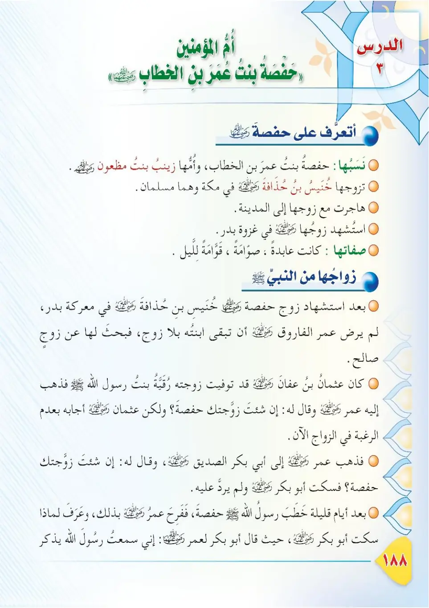
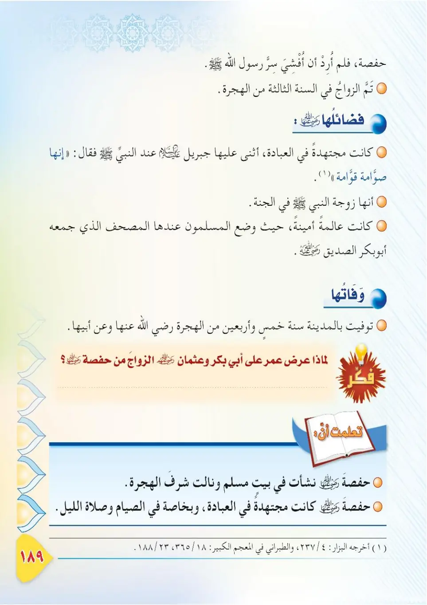
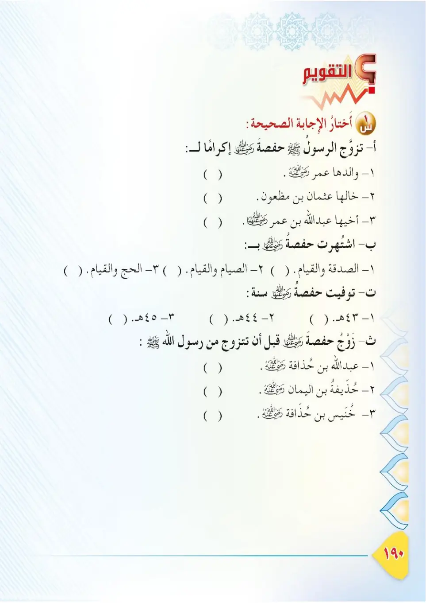

Stage 3·المرحلة الثالثة📖 Unit 6
سِيرَةُ أُمِّ الْمُؤْمِنِينَ حَفْصَةَ رَضِيَ اللهُ عَنْهَا The Wife of the Prophet ﷺ: Hafsah, may Allah be pleased with her
From the Textbookpp. 189–191



مِنْ زَوْجَاتِ النَّبِيِّ ﷺ أُمُّ الْمُؤْمِنِينَ حَفْصَةُ بِنْتُ عُمَرَ بْنِ الْخَطَّابِ رَضِيَ اللهُ عَنْهَا، وَهِيَ الَّتِي طَلَبَهَا أَبُو بَكْرٍ وَعُثْمَانُ رَضِيَ اللهُ عَنْهُمَا زَوْجَةً. فَلْنَتَعَرَّفْ عَلَى سِيرَتِهَا.
Min zawjati an-nabiyyi ﷺ Umm al-Mu'minine Hafsatu bintu 'Umar ibni al-Khattabi radiyallahu 'anha, wa hiya allati talabaha Abu Bakrun wa 'Uthmanu radiyallahu 'anhuma zawjan. Falnata'arraf 'ala siratiha.
Among the wives of the Prophet ﷺ is Umm al-Mu'minin Hafsah bint 'Umar ibn al-Khattab, may Allah be pleased with her, who was sought in marriage by Abu Bakr and 'Uthman. In this lesson, let us learn her story.
நபி ﷺ அவர்களின் மனைவியரில் உம்முல் முஃமினீன் ஹஃப்ஸா இப்னத் உமர் இப்ன் அல்-கத்தாப் (ரலி) ஆவார்; அபூ பக்ர், உத்மான் (ரலி) ஆகியோர் திருமணம் செய்ய விரும்பியவர். அவர்களின் வாழ்க்கையை அறிவோம்.
طُلِقَتْ حَفْصَةُ مِنْ زَوْجِهَا خُنَيْسِ بْنِ حُذَافَةَ رَضِيَ اللهُ عَنْهُ الَّذِي اسْتُشْهِدَ فِي غَزْوَةِ بَدْرٍ، فَتَزَوَّجَهَا النَّبِيُّ ﷺ سَنَةَ ثَلَاثٍ مِنَ الْهِجْرَةِ، وَهِيَ ابْنَةُ ثَلَاثٍ وَعِشْرِينَ.
Tuwuffiya zaujuha Khunaysu ibnu Hudhafata radiyallahu 'anhu alladhi ustush'hida fi ghawzati Badr, fatazawwajaha an-nabiyyu ﷺ sanata thalathin mina al-hijrah, wa hiya ibnato thalathin wa 'ishrina.
Hafsah was widowed from her husband Khunays ibn Hudhafah, may Allah be pleased with him, who was martyred at the Battle of Badr, then the Prophet ﷺ married her in the year 3 AH, when she was twenty-three years old.
பத்ர் போரில் ஷஹாபத்து அடைந்த கணவர் குனைஸ் இப்னு ஹுதாஃபா (ரலி) மரணித்த பிறகு, நபி ﷺ அவரை ஹிஜ்ரி 3-இல் மணந்தார்கள்; அப்போது அவருக்கு 23 வயது.
كَانَتْ حَفْصَةُ رَضِيَ اللهُ عَنْهَا صَوَّامَةً قَوَّامَةً، يَكْثُرُ قِيَامُهَا وَتِلَاوَتُهَا لِلْقُرْآنِ؛ وَكَانَتْ أَوَّلَ مَنْ جَمَعَ الْمُصْحَفَ الشَّرِيفَ فِي عَهْدِ أَبِي بَكْرٍ الصِّدِّيقِ رَضِيَ اللهُ عَنْهُ.
Kanat Hafsatu radiyallahu 'anha sawwamatan qawwamatan, yakthuru qiyamuha wa tilawat-uha lil-Qur'an; wa kanat awwala man hamilat al-mus-hafa ash-sharifa fi 'ahdi Abi Bakrin as-Siddiq radiyallahu 'anhu.
Hafsah, may Allah be pleased with her, was constant in fasting and night prayers, and she frequently stood in prayer and recited the Quran. She was the keeper of the copy of the Quran compiled during the caliphate of Abu Bakr as-Siddiq, may Allah be pleased with him.
ஹஃப்ஸா (ரலி) நோன்பும் இரவு தொழுகையும் அதிகம் செய்பவர்; அபூ பக்ர் (ரலி) காலத்தில் தொகுக்கப்பட்ட குர்ஆன் பிரதியை பாதுகாத்தவர்.
تُوُفِّيَتْ حَفْصَةُ رَضِيَ اللهُ عَنْهَا سَنَةَ خَمْسٍ وَأَرْبَعِينَ لِلْهِجْرَةِ فِي زَمَنِ مُعَاوِيَةَ بْنِ أَبِي سُفْيَانَ، رَضِيَ اللهُ عَنْهُمْ أَجْمَعِينَ.
Tawaffiyat Hafsatu radiyallahu 'anha sanata khamsin wa arba'ina lil-hijrah fi zaman Mu'awiyata ibni Abi Sufyan, radiyallahu 'anhum ajma'in.
Hafsah, may Allah be pleased with her, passed away in the year 45 AH during the time of Mu'awiyah ibn Abi Sufyan, may Allah be pleased with them all.
ஹஃப்ஸா (ரலி) ஹிஜ்ரி 45-இல், முஆவியா (ரலி) காலத்தில் இறந்தார்.